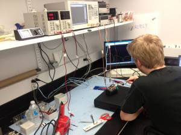
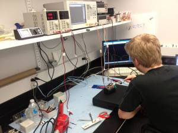
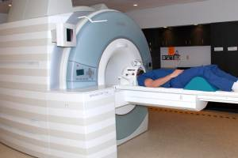
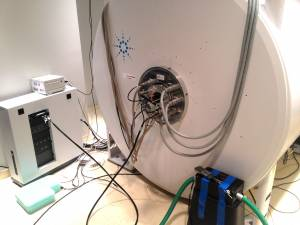

🏛 Facilities#
The main lab is located at Ecole Polytechnique, 5th floor, biomedical engineering section (L5613, L5626).
Computer Lab (L5626)#


NeuroPoly Computing Equipment#
~ 15 iMac workstations (quad-core up to 3.4GHz, at least 16GB RAM)
1 data storage station (max 15TB) which is backed up nightly on another station (physically located elsewhere)
2 CPU clusters (64-core & 12-core Xeon Phi)
3 GPU clusters (8xP100 & 2xTesla).
Additional Computing Equipment#
In addition, the lab has free access to:
2 CPU clusters located at the Geriatric Institute Research Center of the Université de Montréal (64-core & 24-core)
CPU/GPU/Storage resources from Compute Canada (https://www.computecanada.ca/research-portal/accessing-resources/available-resources/).
Software#
In terms of software license, being part of Polygrames Research Center and École Polytechique, NeuroPoly has access to multiple software for engineering, mathematical computing and simulations (http://www.grames.polymtl.ca/facilities/servers-information/).
RF Lab (L5613)#
 

NeuroPoly has expertise in building radiofrequency (RF) coils for MRI applications. The infrastructure includes:
Three network analyzers
E5061B (100kHz-3GHz, full two-port S-parameters)
E5061A (300kHz-1.5GHz, two-port)
FieldFox N9923A (portable, shielded, full two-port S-parameters)
Four DC sources
Several multimeters, small capacitance meter, inductor meter, current probe
Set of non-magnetic fixed and variable capacitors.
PCB printing facilities (acid-based or routing machine)
3D printing:
License to ADS + CST
Part of Poly-Grames and CREER.
MRI Facilities#
3T Human#

List of available scanners:
3T Prisma (Siemens) located at the Unité de Neuroimagerie Fonctionnelle.
3T Skyra (Siemens) located at Polytechnique Montreal (JAB building).
3T Skyra (Siemens) located at Montreal Heart Institute.
Features:
Video projection system for functional MRI experiments.
Physiological monitoring systems (Biopac).
Non-commercial pulse sequences (for advanced diffusion, 2D-RF excitation, dynamic shimming, etc.).
Unique 24-channel shimming system for the spinal cord MRI
Air compressor
7T Human#
List of available scanners:
7T Terra (Siemens) located at the McConnell Brain Imaging Centre.
Features:
Custom RF coil for research purposes 8 pTx & 20 Rx
7T Animal - Small Bore#

Varian/Agilent 7T MR system located at the Montreal Heart Institute.
Gradients
305/210 HD, Internal Diameter: 210 mm, 300 mT/m, 470 mT/m/ms
205/120 HD, Internal Diameter: 120 mm, 600 mT/m, 4400 mT/m/ms
Animal facilities (rats, mice, rabbits).
Commercial and custom-made coils available.
4ch Rx-only mouse coil (RapidMR), 32mm diameter.
Access to histology for ex vivo scans.
Wiki for coil dev / pulse seq programming / MR acquisition (login required + only accessible from campus/VPN)